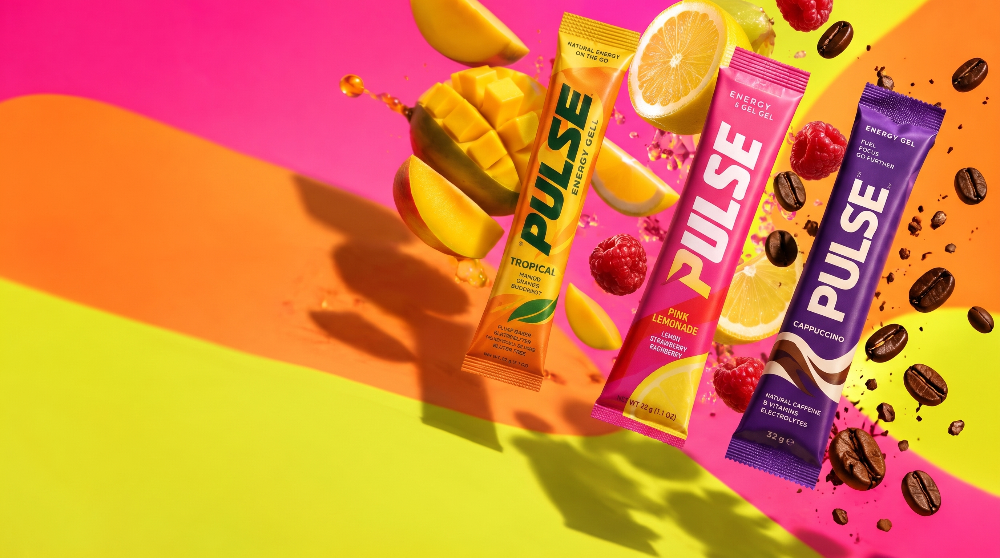

.jpg)
01 / 03
Tropical
Manga, bergamota e laranja.
Uma explosão tropical, com notas cítricas e frutadas para quem gosta de sabores intensos e refrescantes.

Não importa a distância, a velocidade ou o desafio. PULSE é o gel energético que acompanha você quando o corpo pede mais movimento.
Conheça os sabores
Uma explosão tropical, com notas cítricas e frutadas para quem gosta de sabores intensos e refrescantes.
O equilíbrio entre o toque cítrico do limão-siciliano e a intensidade adocicada das frutas vermelhas. Uma combinação marcante e cheia de personalidade.
.jpg)
.jpg)
A intensidade do café encontra a suavidade do chocolate em uma combinação cremosa, envolvente e nada convencional.
Seu próximo desafio está esperando. Leve PULSE com você e tenha uma fonte prática de carboidratos durante suas atividades físicas.
Compre agora"Confesso que não esperava gostar tanto! O sabor é muito bom e é superprático de levar. O Tropical virou meu favorito!"
"O Pink Lemonade é surreal! Tem aquele azedinho na medida certa e não parece aqueles produtos com sabor artificial. Curti demais!"
"Café com chocolate foi uma surpresa muito boa. É diferente de tudo que já experimentei. Já quero testar os outros sabores!"
Depoimentos ilustrativos criados para apresentação conceitual da marca.
A quantidade exata de carboidratos estará indicada na tabela nutricional da embalagem de cada PULSE Energy Gel. Consulte as informações do produto para conferir os valores por sachê.
O PULSE pode ser consumido durante atividades físicas, de acordo com a duração e intensidade do exercício e com sua estratégia nutricional. Siga sempre as orientações de consumo indicadas na embalagem.
A necessidade de consumir água junto com o gel depende da composição e das orientações do produto. Confira as instruções presentes na embalagem e mantenha uma boa hidratação durante suas atividades.
A presença de cafeína depende da formulação final do produto. Consulte a lista de ingredientes e a tabela nutricional na embalagem para verificar essa informação.
A composição e a presença de açúcares ou adoçantes devem ser verificadas na lista de ingredientes e na tabela nutricional de cada produto.
Mantenha os sachês na embalagem original, em local fresco, seco e protegido da luz solar direta. Confira também as recomendações de armazenamento indicadas pelo fabricante.
Não. O gel energético é uma opção prática para complementar a ingestão de carboidratos durante atividades físicas, mas não substitui uma alimentação equilibrada ou uma refeição completa.
.jpg)
Prepare-se, encontre seu ritmo e leve sua energia para onde quiser.
Quero experimentar